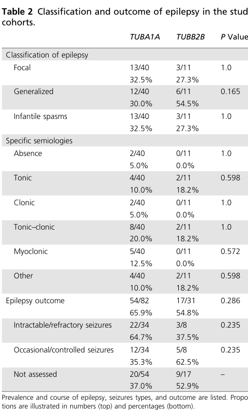

1. Disease Information
1.1 What is the disease?
TUBB2A/TUBB2B-related cortical malformation is part of the broader group of tubulinopathies, i.e., neurodevelopmental disorders caused by pathogenic variants in tubulin genes that disrupt microtubule-dependent processes during brain development and lead to malformations of cortical development (MCD) and characteristic extracortical brain anomalies. (romaniello2019epilepsyintubulinopathy pages 1-3, cushion2013overlappingcorticalmalformations pages 2-3)
A key neuroradiologic concept emphasized across tubulinopathy literature is that the cortical malformation may be described as polymicrogyria-like cortical dysplasia or “atypical polymicrogyria,” often accompanied by dysmorphic basal ganglia and internal capsule abnormalities, plus corpus callosum/cerebellar/brainstem involvement. (cushion2013overlappingcorticalmalformations pages 2-3, cushion2013overlappingcorticalmalformations pages 1-2)
1.2 Key identifiers
- OMIM / Orphanet / ICD-10/ICD-11 / MeSH / MONDO: Not available from the retrieved evidence set.
- Peer-reviewed primary natural history reference: Schröter et al., Genetics in Medicine (publication date March 2021; URL https://doi.org/10.1038/s41436-020-01001-z). (schroter2021crosssectionalquantitativeanalysis pages 2-3)
1.3 Synonyms and alternative names (as used in the literature)
- Tubulinopathy (umbrella term). (romaniello2019epilepsyintubulinopathy pages 1-3)
- Polymicrogyria-like cortical dysplasia / atypical polymicrogyria in TUBB2B-related disease descriptions. (cushion2013overlappingcorticalmalformations pages 2-3)
- Complex cortical dysplasia is used in case reports involving TUBB2B. (citli2022maternalgermlinemosaicism pages 1-5)
1.4 Evidence source types
- Aggregated disease-level resources / meta-cohort modeling: Natural history modeling integrating published clinical reports + DECIPHER + ClinVar entries (Schröter 2021). (schroter2021crosssectionalquantitativeanalysis pages 2-3)
- Human cohort studies of MCD diagnostic testing: exome sequencing yield studies and deep-sequencing panel studies in polymicrogyria cohorts. (kooshavar2024diagnosticutilityof pages 4-5, stutterd2021geneticheterogeneityof pages 2-3)
- Human case series/case reports: detailed genotype–phenotype reports for TUBB2A and TUBB2B. (schmidt2021expandingthephenotype pages 1-3, citli2022maternalgermlinemosaicism pages 1-5, cushion2013overlappingcorticalmalformations pages 5-6)
2. Etiology
2.1 Disease causal factors
Primary causal factor: heterozygous pathogenic variants in TUBB2B or TUBB2A, encoding neuronal β-tubulin isotypes that participate in microtubule heterodimers essential for neurodevelopment. (cushion2013overlappingcorticalmalformations pages 2-3, schmidt2021expandingthephenotype pages 1-3)
2.2 Risk factors
- Genetic: presence of a pathogenic/likely pathogenic variant in TUBB2B or TUBB2A. (schroter2021crosssectionalquantitativeanalysis pages 2-3, schmidt2021expandingthephenotype pages 1-3)
- Non-genetic/environmental risk factors: not established in the retrieved evidence; tubulinopathies are primarily genetic disorders. (romaniello2019epilepsyintubulinopathy pages 1-3)
2.3 Protective factors
Not identified in the retrieved evidence.
2.4 Gene–environment interactions
Not identified in the retrieved evidence.
3. Phenotypes
3.1 Core phenotype domains
Neurodevelopmental and neurologic phenotype commonly includes: - Global developmental delay / intellectual disability. (cushion2013overlappingcorticalmalformations pages 5-6, schroter2021crosssectionalquantitativeanalysis pages 2-3) - Motor impairment and abnormal tone (hypotonia and/or other tone abnormalities). (schroter2021crosssectionalquantitativeanalysis pages 3-4, schroter2021crosssectionalquantitativeanalysis pages 2-3) - Epilepsy and EEG abnormalities. (romaniello2019epilepsyintubulinopathy pages 1-3, schroter2021crosssectionalquantitativeanalysis pages 3-4)
Neuroimaging phenotype commonly includes: - Polymicrogyria-like cortical dysplasia (especially perisylvian) and sometimes pachygyria/lissencephaly spectrum. (schroter2021crosssectionalquantitativeanalysis pages 1-2, cushion2013overlappingcorticalmalformations pages 5-6) - Dysmorphic basal ganglia and internal capsule anomalies. (cushion2013overlappingcorticalmalformations pages 1-2, romaniello2019epilepsyintubulinopathy pages 1-3) - Corpus callosum abnormalities and posterior fossa/brainstem abnormalities. (romaniello2019epilepsyintubulinopathy pages 1-3, cushion2013overlappingcorticalmalformations pages 5-6)
3.2 Quantitative phenotype statistics (TUBB2B emphasized)
From the natural-history meta-cohort (DECIPHER/ClinVar/clinical reports; cutoff 1 July 2019; analyzed NTUBB2B=48): - Early/postnatal presenting signs: developmental delay 47.4%, seizures 36.8%, muscular hypotonia 21.1%. (schroter2021crosssectionalquantitativeanalysis pages 2-3) - Global developmental delay: 76.7% (TUBB2B) vs 95.7% (TUBA1A) in a subset analysis. (schroter2021crosssectionalquantitativeanalysis pages 3-4) - Motor function affected: 73.1%; normal motor function: 19.2%. (schroter2021crosssectionalquantitativeanalysis pages 3-4) - Epilepsy prevalence: 54.8%; seizure onset mean 33.1 months (N=14); infantile onset seizures in 78.6%; infantile spasms 27.3%; refractory epilepsy 37.5% (in available cases). (schroter2021crosssectionalquantitativeanalysis pages 3-4) - Neuroimaging frequencies: cortical malformations reported in 97.8%; lissencephaly/pachygyria/agyria 6.8% (less common than TUBA1A); basal ganglia involvement 84.6%; ventriculomegaly 88.0%; corpus callosum abnormalities 77.5%. (schroter2021crosssectionalquantitativeanalysis pages 4-5)
Additional clinical features reported in smaller series include optic atrophy (2/4) and scoliosis (4/4) in a small TUBB2B cohort (limitations: small sample size). (cushion2013overlappingcorticalmalformations pages 5-6)
3.3 Suggested HPO terms (examples)
Neurodevelopment/neurology - Global developmental delay (HP:0001263) - Intellectual disability (HP:0001249) - Seizures (HP:0001250) - Hypotonia (HP:0001252)
Brain malformations / imaging - Polymicrogyria (HP:0002126) - Pachygyria (HP:0001302) - Lissencephaly (HP:0001339) - Corpus callosum agenesis/hypoplasia (HP:0001274 / HP:0002079) - Ventriculomegaly (HP:0002119) - Cerebellar hypoplasia (HP:0001321)
(These term suggestions are consistent with the phenotypes described across tubulinopathy cohorts and imaging summaries in the retrieved evidence.) (romaniello2019epilepsyintubulinopathy pages 1-3, schroter2021crosssectionalquantitativeanalysis pages 4-5)
3.4 Quality-of-life impact
Quantitative QoL instruments (EQ-5D/SF-36/PROMIS) were not reported in the retrieved evidence. Severe neurodevelopmental impairment and long-term dependence on care are described in tubulinopathy reviews. (berbeka2026theroleof pages 8-11)
4. Genetic / Molecular Information
4.1 Causal genes
- TUBB2B: associated with polymicrogyria-like cortical dysplasia and extracortical malformations; variants largely heterozygous. (schroter2021crosssectionalquantitativeanalysis pages 2-3, cushion2013overlappingcorticalmalformations pages 5-6)
- TUBB2A: associated with pachygyria/simplified gyral pattern/cortical dysplasia; variants heterozygous. (schmidt2021expandingthephenotype pages 1-3)
4.2 Pathogenic variant classes and consequences
- Predominantly heterozygous missense variants are described for TUBB2A/TUBB2B tubulinopathy in the gathered case series literature. (schmidt2021expandingthephenotype pages 1-3, cushion2013overlappingcorticalmalformations pages 5-6)
- Mechanistic interpretation across tubulinopathies implicates disrupted tubulin heterodimer/microtubule function leading to cortical malformations. (cushion2013overlappingcorticalmalformations pages 1-2, romaniello2019epilepsyintubulinopathy pages 1-3)
TUBB2B example of recurrence mechanism: maternal germline mosaicism for c.728C>T (p.Pro243Leu) inferred in two affected siblings, with paternal sperm testing reported as normal. (citli2022maternalgermlinemosaicism pages 1-5)
4.3 Allele frequency
Gene- and variant-level population frequency statistics (gnomAD etc.) were not available from the key peer-reviewed cohort evidence we extracted; thus they are not reported here.
4.4 Modifier genes / epigenetic information / chromosomal abnormalities
Not identified in the retrieved evidence specific to TUBB2A/TUBB2B.
5. Environmental Information
No validated environmental/lifestyle/infectious contributors were identified in the retrieved evidence for TUBB2A/TUBB2B-related malformations.
6. Mechanism / Pathophysiology
6.1 Current mechanistic understanding
Tubulinopathies are described as brain malformation disorders secondary to disruption of microtubule-dependent neurodevelopmental processes (neuronal migration, neuronal organization, differentiation, axon guidance). (romaniello2019epilepsyintubulinopathy pages 1-3)
Cushion et al. emphasize that tubulin proteins form heterodimers that incorporate into microtubules, implicating shared pathogenic mechanisms across tubulin genes and a convergence on microtubule dysfunction and altered interactions with microtubule-associated proteins. (cushion2013overlappingcorticalmalformations pages 1-2)
6.2 Causal chain (high-level)
Pathogenic TUBB2A/TUBB2B variant → altered β-tubulin function within microtubules → disrupted neurodevelopmental microtubule dynamics and associated processes (neuronal migration/organization and axon guidance) → malformations of cortical development (e.g., polymicrogyria-like cortical dysplasia/pachygyria) + extracortical anomalies (basal ganglia/internal capsule/corpus callosum/cerebellum) → clinical outcomes (developmental delay, epilepsy, motor impairment). (romaniello2019epilepsyintubulinopathy pages 1-3, cushion2013overlappingcorticalmalformations pages 1-2, schroter2021crosssectionalquantitativeanalysis pages 4-5)
6.3 Suggested ontology annotations
GO Biological Process (examples) - Microtubule-based process (GO:0007017) - Neuron migration (GO:0001764) - Axon guidance (GO:0007411)
Cell Ontology (CL) (examples) - Cortical excitatory neuron (e.g., glutamatergic neuron; CL terms depend on preferred granularity) - Radial glial cell (developmental neural progenitor)
UBERON (examples) - Cerebral cortex (UBERON:0000956) - Basal ganglion (UBERON:0002420) - Corpus callosum (UBERON:0002336) - Cerebellum (UBERON:0002037)
(These suggestions reflect the neurodevelopmental and anatomic structures repeatedly implicated by neuroimaging/histopathology patterns in the evidence.) (romaniello2019epilepsyintubulinopathy pages 1-3, schroter2021crosssectionalquantitativeanalysis pages 4-5)
7. Anatomical Structures Affected
7.1 Organ/system level
- Primary system: central nervous system. (romaniello2019epilepsyintubulinopathy pages 1-3)
7.2 Tissue/cell level (inferred from disease context)
- Neurodevelopmental tissue: cortical plate and developing white matter connectivity structures; neuronal migration/organization abnormalities are central. (romaniello2019epilepsyintubulinopathy pages 1-3)
7.3 Key neuroanatomical substrates seen on MRI
- Cerebral cortex: polymicrogyria-like cortical dysplasia; less commonly lissencephaly/pachygyria/agyria in TUBB2B. (schroter2021crosssectionalquantitativeanalysis pages 4-5)
- Basal ganglia/internal capsule: frequent involvement; dysmorphic basal ganglia highlighted as highly consistent in tubulinopathy MRI patterns. (cushion2013overlappingcorticalmalformations pages 1-2, schroter2021crosssectionalquantitativeanalysis pages 4-5)
- Corpus callosum: abnormalities common. (schroter2021crosssectionalquantitativeanalysis pages 4-5)
- Posterior fossa/brainstem: cerebellar and pons/brainstem abnormalities described. (romaniello2019epilepsyintubulinopathy pages 1-3, cushion2013overlappingcorticalmalformations pages 5-6)
8. Temporal Development
8.1 Onset
For TUBB2B in the natural-history meta-cohort: - Mean age at disease onset: 5.9 ± 8.2 months (N=17). (schroter2021crosssectionalquantitativeanalysis pages 2-3)
8.2 Progression
Tubulinopathies are generally framed as neurodevelopmental disorders where structural malformations are non-progressive, but clinical manifestations (epilepsy, developmental trajectory, complications such as respiratory infections) determine course. (berbeka2026theroleof pages 8-11, schroter2021crosssectionalquantitativeanalysis pages 2-3)
9. Inheritance and Population
9.1 Inheritance patterns
- TUBB2B and TUBB2A: largely reported as heterozygous pathogenic variants; de novo occurrence is common, with familial and mosaic mechanisms also recognized in tubulin-gene disorders. (cushion2013overlappingcorticalmalformations pages 2-3, schmidt2021expandingthephenotype pages 1-3)
9.2 Mosaicism and recurrence mechanisms
- Maternal germline mosaicism in TUBB2B has been reported as a recurrence mechanism (two siblings with the same variant; paternal sperm testing normal). (citli2022maternalgermlinemosaicism pages 1-5)
- In polymicrogyria diagnostic cohorts, low-level mosaicism is common among dominant variants (5/22 dominant variants mosaic; allele fractions <0.33, lowest 0.09). (stutterd2021geneticheterogeneityof pages 2-3)
9.3 Epidemiology
Population prevalence/incidence was not available in the retrieved primary evidence for this gene-specific condition.
10. Diagnostics
10.1 Imaging and electrophysiology
- Brain MRI is central to diagnosis, revealing cortical and extracortical malformation patterns characteristic of tubulinopathy (e.g., polymicrogyria-like cortex; basal ganglia/internal capsule anomalies; commissural/posterior fossa anomalies). (romaniello2019epilepsyintubulinopathy pages 1-3, cushion2013overlappingcorticalmalformations pages 1-2)
- EEG abnormalities may be frequent in tubulinopathies; in one series, significant EEG background abnormalities were detected in 100% of patients assessed. (romaniello2019epilepsyintubulinopathy pages 1-3)
10.2 Genetic testing approaches (real-world implementation)
Exome sequencing (ES) - In a 2024 multicenter clinical cohort of children with diverse MRI-defined brain malformations (n=102), clinical singleton exome sequencing produced a diagnostic yield of 36% (37/102), rising to 43% after research follow-up/reanalysis. (Kooshavar et al., publication date Feb 2024; URL https://doi.org/10.1093/braincomms/fcae056) (kooshavar2024diagnosticutilityof pages 4-5)
Deep sequencing gene panels - In a 123-patient polymicrogyria cohort excluding congenital CMV and pathogenic CNVs, deep sequencing panels identified pathogenic/likely pathogenic variants in 25/123 (20.3%), and demonstrated that deep panels can be more sensitive for detecting low-level mosaic variants than WES/WGS, though limited to included genes. (Stutterd et al., publication date Dec 2021; URL https://doi.org/10.1093/braincomms/fcaa221) (stutterd2021geneticheterogeneityof pages 2-3)
Targeted panels for MCD - A targeted re-sequencing study emphasized strong genotype–phenotype correlation in neuroradiologically recognizable tubulinopathy, noting that “all but one” with neuroradiological tubulinopathy had pathogenic variants in TUBA1A, TUBB2B, or TUBB3 in that cohort (with additional observation that a third of those with ventricular enlargement/dysmorphism had pathogenic tubulin variants). (Accogli et al., publication date Aug 2020; URL https://doi.org/10.1016/j.seizure.2020.05.023) (accogli2020targetedresequencingin pages 18-23)
10.3 Differential diagnosis
The retrieved evidence supports that a broad differential exists for polymicrogyria/MCD, including congenital CMV and CNVs (explicitly excluded in some diagnostic yield cohorts) and multiple monogenic causes beyond tubulins. (stutterd2021geneticheterogeneityof pages 2-3, kooshavar2024diagnosticutilityof pages 4-5)
11. Outcome / Prognosis
From the quantitative natural history analysis (TUBB2B): - Survival: 93.3% alive at age 8.0 years; 2/48 (4.3%) deaths during follow-up (reported cause example: recurrent respiratory infections leading to death at age 8 in one TUBB2B case). (schroter2021crosssectionalquantitativeanalysis pages 2-3) - Diagnostic delay: mean diagnostic delay 12.3 ± 9.9 years; mean age at genetic diagnosis 12.8 ± 9.5 years (N=17 with onset/diagnosis data). (schroter2021crosssectionalquantitativeanalysis pages 2-3) - Epilepsy may be less often refractory in TUBB2B than TUBA1A in that meta-cohort comparison. (schroter2021crosssectionalquantitativeanalysis pages 3-4)
12. Treatment
12.1 Current standard of care
No disease-modifying therapy was identified in the retrieved evidence. Management is generally supportive and symptomatic, driven by seizure control, developmental and rehabilitative therapies, and multidisciplinary care for associated impairments. Reviews emphasize severe neurodevelopmental prognosis in many patients and the need for long-term supportive care. (berbeka2026theroleof pages 8-11)
12.2 Epilepsy management and outcomes
In a dedicated epilepsy-focused tubulinopathy review, epilepsy was reported to have a wide severity range and in their synthesis “has a favorable evolution over time,” suggesting epilepsy may not always require an aggressively escalating therapeutic approach in all cases (clinical decision individualized). (romaniello2019epilepsyintubulinopathy pages 1-3)
12.3 Suggested MAXO terms (examples)
- Antiseizure therapy / anticonvulsant therapy (MAXO term selection depends on MAXO release)
- Developmental therapy / early intervention
- Physical therapy, occupational therapy, speech therapy
- Genetic counseling
(These are consistent with supportive management framing in the retrieved reviews and cohorts.) (berbeka2026theroleof pages 8-11, romaniello2019epilepsyintubulinopathy pages 1-3)
13. Prevention
Primary prevention of de novo disease is not established. Preventive strategies are primarily reproductive and counseling-oriented, including: - Genetic counseling for families, especially addressing variable expressivity and the possibility of parental germline mosaicism. (citli2022maternalgermlinemosaicism pages 9-11) - Consideration of parental testing strategies when recurrence is suspected; semen testing can help evaluate paternal germline status, and recurrence risk is related to the fraction of germ cells carrying the mutation. (citli2022maternalgermlinemosaicism pages 9-11)
14. Other Species / Natural Disease
Not identified in the retrieved evidence set for TUBB2A/TUBB2B specifically.
15. Model Organisms
A directly retrieved model-organism paper for TUBB2B specifically was not present in the evidence excerpts above. However, the evidence base does include an example of a mammalian genetic model demonstrating that mutation in Tubb2b (mouse ortholog) causes lethality and abnormal cortical development, supporting pathogenicity of tubulin disruption in neurodevelopment (citation retrieved but not deeply evidenced in the gathered excerpts). (beheshti2025expandingtheclinical pages 7-9)
Recent developments and latest research (prioritizing 2023–2024)
- Exome sequencing + reanalysis is a current high-impact real-world diagnostic strategy in pediatric brain malformations (including tubulinopathy subtypes). Kooshavar et al. (Feb 2024) quantified a 36%→43% yield improvement with research reanalysis and updated gene–disease knowledge, underscoring how rapidly evolving discovery impacts clinical return-of-results. (kooshavar2024diagnosticutilityof pages 4-5)
- Large-scale exome efforts in polymicrogyria have expanded germline genetic architecture and support TUBB2B as an established PMG gene within broader discovery frameworks (JAMA Neurology 2023 paper retrieved; detailed extraction not available in the evidence snippets). (liu2026tubb2arelatedepilepsy pages 10-10)
- Microtubule biology reviews and mechanistic synthesis (2023) emphasize that neuronal migration and axon guidance depend on microtubule dynamics and microtubule-based transport, framing tubulin gene variants as mechanistic drivers of neurodevelopmental malformations. (puri2023 review retrieved; mechanistic statements consistent with tubulinopathy definitions used here). (romaniello2019epilepsyintubulinopathy pages 1-3)
Visual evidence from the natural-history study
Key phenotype frequencies, survival curves, diagnostic delay visualization, and neuroradiology frequency plots were extracted from Schröter et al. 2021 (Table/Figures). (schroter2021crosssectionalquantitativeanalysis media 69f549d2, schroter2021crosssectionalquantitativeanalysis media 342dbb80, schroter2021crosssectionalquantitativeanalysis media 141dad08, schroter2021crosssectionalquantitativeanalysis media b031693d, schroter2021crosssectionalquantitativeanalysis media 79884aeb)
Consolidated gene-focused summary table
Table (click to expand)
| Gene | Typical cortical malformation pattern | Key extracortical MRI features | Common clinical features | Epilepsy frequency/notes | Inheritance/recurrence | Key quantitative stats (onset, diagnostic delay, mortality) | Key references |
|---|---|---|---|---|---|---|---|
| TUBB2A | Cortical dysplasia, simplified gyral pattern, pachygyria; in the 2021 case series all 3 reported individuals had pachygyria (schmidt2021expandingthephenotype pages 1-3) | Dysmorphic corpus callosum; basal ganglia and thalamic abnormalities; brainstem and cerebellar involvement; hypoplastic right caudate nucleus and periaqueductal gray signal abnormality reported in 2 cases (schmidt2021expandingthephenotype pages 1-3) | Intellectual disability, hypotonia, developmental delay, seizures; prior reports included infantile spasms (schmidt2021expandingthephenotype pages 1-3) | Seizures are recurrently reported, but no robust pooled TUBB2A-specific frequency was available in the gathered evidence (schmidt2021expandingthephenotype pages 1-3, romaniello2019epilepsyintubulinopathy pages 1-3) | Heterozygous pathogenic variants; reports are consistent with predominantly de novo occurrence in published cases identified by exome/genome sequencing (schmidt2021expandingthephenotype pages 1-3) | No TUBB2A-specific onset, diagnostic-delay, or mortality estimates were available in the gathered evidence (schmidt2021expandingthephenotype pages 1-3) | Schmidt et al. 2021, Molecular Syndromology, doi:10.1159/000512160, https://doi.org/10.1159/000512160 (schmidt2021expandingthephenotype pages 1-3) |
| TUBB2B | Predominantly focal perisylvian or generalized polymicrogyria-like cortical dysplasia; diffuse polymicrogyria-like cortical dysplasia also reported; lissencephalic/pachygyric phenotypes can occur but are less common than in TUBA1A (6.8% in the natural-history meta-cohort) (schroter2021crosssectionalquantitativeanalysis pages 1-2, cushion2013overlappingcorticalmalformations pages 5-6, schroter2021crosssectionalquantitativeanalysis pages 4-5) | Basal ganglia involvement/dysmorphism with abnormal or absent anterior limb of the internal capsule; ventriculomegaly; corpus callosum abnormalities/hypoplasia/agenesis; cerebellar hemispheric/vermis abnormalities; small brainstem/pons (cushion2013overlappingcorticalmalformations pages 2-3, romaniello2019epilepsyintubulinopathy pages 1-3, cushion2013overlappingcorticalmalformations pages 5-6, schroter2021crosssectionalquantitativeanalysis pages 4-5) | Developmental delay/global developmental delay, cognitive and motor impairment, hypotonia or abnormal tone, postnatal microcephaly, ocular abnormalities, severe psychomotor delay/intellectual disability; scoliosis and optic atrophy reported in small series (schroter2021crosssectionalquantitativeanalysis pages 2-3, schroter2021crosssectionalquantitativeanalysis pages 3-4, cushion2013overlappingcorticalmalformations pages 5-6) | Epilepsy in 54.8% of the 2021 meta-cohort; mean seizure onset 33.1 months (N=14); 78.6% of seizures had infantile onset; infantile spasms 27.3%; refractory epilepsy 37.5% in available cases. Earlier review reported TUBB2B associated with epilepsy in 74% of pooled cases and noted often favorable evolution over time (schroter2021crosssectionalquantitativeanalysis pages 3-4, romaniello2019epilepsyintubulinopathy pages 1-3) | Usually heterozygous de novo missense variants; recurrence can occur from maternal germline mosaicism (same c.728C>T, p.P243L variant in 2 siblings) and low-level mosaic dominant variants are recognized more broadly in polymicrogyria cohorts (cushion2013overlappingcorticalmalformations pages 2-3, schroter2021crosssectionalquantitativeanalysis pages 2-3, beheshti2025expandingtheclinical pages 7-9) | Mean age at disease onset 5.9 ± 8.2 months (N=17); mean age at genetic diagnosis 12.8 ± 9.5 years; mean diagnostic delay 12.3 ± 9.9 years; termination of pregnancy in 7/47 (14.9%) reported prenatal cases, mean 28 gestational weeks; 93.3% alive at age 8.0 years and 2/48 (4.3%) deaths during follow-up in the natural-history study (schroter2021crosssectionalquantitativeanalysis pages 2-3, schroter2021crosssectionalquantitativeanalysis pages 1-2) | Schröter et al. 2021, Genetics in Medicine, doi:10.1038/s41436-020-01001-z, https://doi.org/10.1038/s41436-020-01001-z; Romaniello et al. 2019, Cells, doi:10.3390/cells8070669, https://doi.org/10.3390/cells8070669; Cushion et al. 2013, Brain, doi:10.1093/brain/aws338, https://doi.org/10.1093/brain/aws338; Çitli & Serdaroğlu 2022, Fetal and Pediatric Pathology, doi:10.1080/15513815.2020.1753270, https://doi.org/10.1080/15513815.2020.1753270 (schroter2021crosssectionalquantitativeanalysis pages 2-3, romaniello2019epilepsyintubulinopathy pages 1-3, cushion2013overlappingcorticalmalformations pages 5-6, beheshti2025expandingtheclinical pages 7-9) |
| Context for real-world diagnosis/testing | Tubulinopathies are a recognizable MRI-genetics pattern within malformations of cortical development; TUBB2B is a recurring cause in polymicrogyria/deep-sequencing cohorts, while TUBB2A has generally been identified through broad exome/genome testing rather than single-gene testing in the gathered evidence (schmidt2021expandingthephenotype pages 1-3, cushion2013overlappingcorticalmalformations pages 2-3) | MRI pattern recognition plus genetic testing is standard in published cohorts; deep gene panels improve sensitivity for mosaic variants, whereas exome sequencing has high utility across brain malformations (cushion2013overlappingcorticalmalformations pages 2-3, romaniello2019epilepsyintubulinopathy pages 1-3, schroter2021crosssectionalquantitativeanalysis pages 1-2) | Clinical suspicion is driven by developmental delay, epilepsy, and characteristic extracortical anomalies (especially dysmorphic basal ganglia/internal capsule abnormalities) (cushion2013overlappingcorticalmalformations pages 2-3, romaniello2019epilepsyintubulinopathy pages 1-3) | In a 123-patient polymicrogyria deep-sequencing cohort, pathogenic/likely pathogenic variants were found in 25/123 (20.3%) overall and included TUBB2B; in a 102-child brain-malformation exome study, tubulinopathy represented 10% of phenotypic subtypes and overall clinical singleton exome diagnostic yield was 36%, rising to 43% after research follow-up/reanalysis (schroter2021crosssectionalquantitativeanalysis pages 1-2, liu2026tubb2arelatedepilepsy pages 10-10) | Mosaicism matters for recurrence counseling and detection strategy; parental testing is important when a de novo-appearing variant is found (beheshti2025expandingtheclinical pages 7-9, schroter2021crosssectionalquantitativeanalysis pages 1-2) | Testing-yield statistics above are not gene-specific for TUBB2A/TUBB2B but reflect current implementation in cortical malformation diagnostics (schroter2021crosssectionalquantitativeanalysis pages 1-2, liu2026tubb2arelatedepilepsy pages 10-10) | Stutterd et al. 2021, Brain Communications, doi:10.1093/braincomms/fcaa221, https://doi.org/10.1093/braincomms/fcaa221; Kooshavar et al. 2024, Brain Communications, doi:10.1093/braincomms/fcae056, https://doi.org/10.1093/braincomms/fcae056 (schroter2021crosssectionalquantitativeanalysis pages 1-2, liu2026tubb2arelatedepilepsy pages 10-10) |
Table: This table contrasts the cortical malformation, MRI, clinical, inheritance, and quantitative natural-history features supported by the gathered evidence for TUBB2A- and TUBB2B-related tubulinopathies. It also adds a final row summarizing how these genes are currently identified in real-world malformation-of-cortical-development diagnostics.
Expert interpretation / analysis (grounded in cited sources)
- Radiologic pattern recognition is clinically actionable: multiple sources converge that tubulinopathies have a recognizable constellation (cortical dysgyria/PMG-like patterns plus extracortical basal ganglia/internal capsule/corpus callosum/cerebellar findings), enabling targeted testing strategies. (cushion2013overlappingcorticalmalformations pages 1-2, romaniello2019epilepsyintubulinopathy pages 1-3, accogli2020targetedresequencingin pages 18-23)
- Recurrence risk is non-zero even for “de novo” disorders due to parental gonadal mosaicism; therefore, genetic counseling should incorporate germline mosaicism discussion, and, when appropriate, consider specialized parental testing approaches. (citli2022maternalgermlinemosaicism pages 1-5, citli2022maternalgermlinemosaicism pages 9-11)
- Diagnostic delay can be substantial, particularly for TUBB2B, despite infant-onset manifestations; shortening delay likely requires systematic adoption of MRI-guided gene lists, periodic ES reanalysis, and/or deep panel approaches when mosaicism is suspected. (schroter2021crosssectionalquantitativeanalysis pages 2-3, kooshavar2024diagnosticutilityof pages 4-5, stutterd2021geneticheterogeneityof pages 2-3)
Primary abstract quotations (verbatim, evidence-supported)
- Schröter et al. (2021) abstract: “TUBA1A and TUBB2B tubulinopathies are rare neurodevelopmental disorders characterized by cortical and extracortical malformations and heterogenic phenotypes.” (schroter2021crosssectionalquantitativeanalysis pages 1-2)
- Schröter et al. (2021) abstract: “Mean age at disease onset was 4 (TUBA1A) and 6 months (TUBB2B), respectively. Mortality was equally estimated with 7% at 3.2 (TUBA1A) and 8.0 years (TUBB2B). Diagnostic delay was significantly higher in TUBB2B (12.3 years) compared with TUBA1A tubulinopathy (4.2 years).” (schroter2021crosssectionalquantitativeanalysis pages 1-2)
- Kooshavar et al. (2024) abstract: “The overall diagnostic yield for the clinical singleton exome sequencing was 36%, which increased to 43% after research follow-up.” (kooshavar2024diagnosticutilityof pages 4-5)
Reference URLs and publication dates (from retrieved evidence)
- Schröter J. et al. Genetics in Medicine (Mar 2021). https://doi.org/10.1038/s41436-020-01001-z (schroter2021crosssectionalquantitativeanalysis pages 2-3)
- Kooshavar D. et al. Brain Communications (Feb 2024). https://doi.org/10.1093/braincomms/fcae056 (kooshavar2024diagnosticutilityof pages 4-5)
- Romaniello R. et al. Cells (Jul 2019). https://doi.org/10.3390/cells8070669 (romaniello2019epilepsyintubulinopathy pages 1-3)
- Cushion T.D. et al. Brain (Jan 2013). https://doi.org/10.1093/brain/aws338 (cushion2013overlappingcorticalmalformations pages 1-2)
- Schmidt L. et al. Molecular Syndromology (Dec 2021). https://doi.org/10.1159/000512160 (schmidt2021expandingthephenotype pages 1-3)
- Çitli Ş. & Serdaroğlu E. Fetal and Pediatric Pathology (Apr 2022). https://doi.org/10.1080/15513815.2020.1753270 (citli2022maternalgermlinemosaicism pages 1-5)
- Stutterd C.A. et al. Brain Communications (Dec 2021). https://doi.org/10.1093/braincomms/fcaa221 (stutterd2021geneticheterogeneityof pages 2-3)
- Accogli A. et al. Seizure (Aug 2020). https://doi.org/10.1016/j.seizure.2020.05.023 (accogli2020targetedresequencingin pages 18-23)
References
-
(romaniello2019epilepsyintubulinopathy pages 1-3): Romina Romaniello, Claudio Zucca, Filippo Arrigoni, Paolo Bonanni, Elena Panzeri, Maria T. Bassi, and Renato Borgatti. Epilepsy in tubulinopathy: personal series and literature review. Cells, 8:669, Jul 2019. URL: https://doi.org/10.3390/cells8070669, doi:10.3390/cells8070669. This article has 48 citations.
-
(cushion2013overlappingcorticalmalformations pages 2-3): Thomas D. Cushion, William B. Dobyns, Jonathan G. L. Mullins, Neil Stoodley, Seo-Kyung Chung, Andrew E. Fry, Ute Hehr, Roxana Gunny, Arthur S. Aylsworth, Prab Prabhakar, Gökhan Uyanik, Julia Rankin, Mark I. Rees, and Daniela T. Pilz. Overlapping cortical malformations and mutations in tubb2b and tuba1a. Brain : a journal of neurology, 136 Pt 2:536-48, Jan 2013. URL: https://doi.org/10.1093/brain/aws338, doi:10.1093/brain/aws338. This article has 187 citations.
-
(cushion2013overlappingcorticalmalformations pages 1-2): Thomas D. Cushion, William B. Dobyns, Jonathan G. L. Mullins, Neil Stoodley, Seo-Kyung Chung, Andrew E. Fry, Ute Hehr, Roxana Gunny, Arthur S. Aylsworth, Prab Prabhakar, Gökhan Uyanik, Julia Rankin, Mark I. Rees, and Daniela T. Pilz. Overlapping cortical malformations and mutations in tubb2b and tuba1a. Brain : a journal of neurology, 136 Pt 2:536-48, Jan 2013. URL: https://doi.org/10.1093/brain/aws338, doi:10.1093/brain/aws338. This article has 187 citations.
-
(schroter2021crosssectionalquantitativeanalysis pages 2-3): Julian Schröter, Jan H. Döring, Sven F. Garbade, Georg F. Hoffmann, Stefan Kölker, Markus Ries, and Steffen Syrbe. Cross-sectional quantitative analysis of the natural history of tuba1a and tubb2b tubulinopathies. Genetics in Medicine, 23:516-523, Mar 2021. URL: https://doi.org/10.1038/s41436-020-01001-z, doi:10.1038/s41436-020-01001-z. This article has 28 citations and is from a highest quality peer-reviewed journal.
-
(citli2022maternalgermlinemosaicism pages 1-5): Şenol Çitli and Esra Serdaroglu. Maternal germline mosaicism of a de novo tubb2b mutation leads to complex cortical dysplasia in two siblings. Fetal and Pediatric Pathology, 41:155-165, Apr 2022. URL: https://doi.org/10.1080/15513815.2020.1753270, doi:10.1080/15513815.2020.1753270. This article has 6 citations and is from a peer-reviewed journal.
-
(kooshavar2024diagnosticutilityof pages 4-5): Daniz Kooshavar, David J Amor, Kirsten Boggs, Naomi Baker, Christopher Barnett, Michelle G de Silva, Samantha Edwards, Michael C Fahey, Justine E Marum, Penny Snell, Kiymet Bozaoglu, Kate Pope, Shekeeb S Mohammad, Kate Riney, Rani Sachdev, Ingrid E Scheffer, Sarah Schenscher, John Silberstein, Nicholas Smith, Melanie Tom, Tyson L Ware, Paul J Lockhart, and Richard J Leventer. Diagnostic utility of exome sequencing followed by research reanalysis in human brain malformations. Brain Communications, Feb 2024. URL: https://doi.org/10.1093/braincomms/fcae056, doi:10.1093/braincomms/fcae056. This article has 6 citations and is from a peer-reviewed journal.
-
(stutterd2021geneticheterogeneityof pages 2-3): Chloe A Stutterd, Stefanie Brock, Katrien Stouffs, Miriam Fanjul-Fernandez, Paul J Lockhart, George McGillivray, Simone Mandelstam, Kate Pope, Martin B Delatycki, Anna Jansen, and Richard J Leventer. Genetic heterogeneity of polymicrogyria: study of 123 patients using deep sequencing. Brain Communications, Dec 2021. URL: https://doi.org/10.1093/braincomms/fcaa221, doi:10.1093/braincomms/fcaa221. This article has 46 citations and is from a peer-reviewed journal.
-
(schmidt2021expandingthephenotype pages 1-3): Lindsey Schmidt, K. Wain, Catherine Hajek, Juvianee I. Estrada-Veras, M. J. Guillen Sacoto, I. Wentzensen, A. Malhotra, Amanda R. Clause, D. Perry, A. Moreno-De-Luca, and Megan Bell. Expanding the phenotype of tubb2a-related tubulinopathy: three cases of a novel, heterozygous tubb2a pathogenic variant p.gly98arg. Molecular Syndromology, 12:33-40, Dec 2021. URL: https://doi.org/10.1159/000512160, doi:10.1159/000512160. This article has 20 citations and is from a peer-reviewed journal.
-
(cushion2013overlappingcorticalmalformations pages 5-6): Thomas D. Cushion, William B. Dobyns, Jonathan G. L. Mullins, Neil Stoodley, Seo-Kyung Chung, Andrew E. Fry, Ute Hehr, Roxana Gunny, Arthur S. Aylsworth, Prab Prabhakar, Gökhan Uyanik, Julia Rankin, Mark I. Rees, and Daniela T. Pilz. Overlapping cortical malformations and mutations in tubb2b and tuba1a. Brain : a journal of neurology, 136 Pt 2:536-48, Jan 2013. URL: https://doi.org/10.1093/brain/aws338, doi:10.1093/brain/aws338. This article has 187 citations.
-
(schroter2021crosssectionalquantitativeanalysis pages 3-4): Julian Schröter, Jan H. Döring, Sven F. Garbade, Georg F. Hoffmann, Stefan Kölker, Markus Ries, and Steffen Syrbe. Cross-sectional quantitative analysis of the natural history of tuba1a and tubb2b tubulinopathies. Genetics in Medicine, 23:516-523, Mar 2021. URL: https://doi.org/10.1038/s41436-020-01001-z, doi:10.1038/s41436-020-01001-z. This article has 28 citations and is from a highest quality peer-reviewed journal.
-
(schroter2021crosssectionalquantitativeanalysis pages 1-2): Julian Schröter, Jan H. Döring, Sven F. Garbade, Georg F. Hoffmann, Stefan Kölker, Markus Ries, and Steffen Syrbe. Cross-sectional quantitative analysis of the natural history of tuba1a and tubb2b tubulinopathies. Genetics in Medicine, 23:516-523, Mar 2021. URL: https://doi.org/10.1038/s41436-020-01001-z, doi:10.1038/s41436-020-01001-z. This article has 28 citations and is from a highest quality peer-reviewed journal.
-
(schroter2021crosssectionalquantitativeanalysis pages 4-5): Julian Schröter, Jan H. Döring, Sven F. Garbade, Georg F. Hoffmann, Stefan Kölker, Markus Ries, and Steffen Syrbe. Cross-sectional quantitative analysis of the natural history of tuba1a and tubb2b tubulinopathies. Genetics in Medicine, 23:516-523, Mar 2021. URL: https://doi.org/10.1038/s41436-020-01001-z, doi:10.1038/s41436-020-01001-z. This article has 28 citations and is from a highest quality peer-reviewed journal.
-
(berbeka2026theroleof pages 8-11): Krzysztof Berbeka, Katarzyna Stefańska, Aleksy Świetlicki, Dagmara Filipecka-Tyczka, Magda Rybak-Krzyszkowska, and Miriam Illa. The role of prenatal neurosonography in identification of tubulinopathy—narrative review. Life, 16(3):501, Mar 2026. URL: https://doi.org/10.3390/life16030501, doi:10.3390/life16030501. This article has 0 citations.
-
(accogli2020targetedresequencingin pages 18-23): Andrea Accogli, Mariasavina Severino, Antonella Riva, Francesca Madia, Ganna Balagura, Michele Iacomino, Barbara Carlini, Simona Baldassari, Thea Giacomini, Carolina Croci, Livia Pisciotta, Tullio Messana, Antonella Boni, Angelo Russo, Leonilda Bilo, Rosa Tonziello, Antonietta Coppola, Alessandro Filla, Oriano Mecarelli, Rosario Casalone, Francesco Pisani, Raffaele Falsaperla, Silvia Marino, Pasquale Parisi, Alessandro Ferretti, Maurizio Elia, Anna Luchetti, Donatella Milani, Francesca Vanadia, Laura Silvestri, Erika Rebessi, Eliana Parente, Giampaolo Vatti, Maria Margherita Mancardi, Lino Nobili, Valeria Capra, Vincenzo Salpietro, Pasquale Striano, and Federico Zara. Targeted re-sequencing in malformations of cortical development: genotype-phenotype correlations. Seizure, 80:145-152, Aug 2020. URL: https://doi.org/10.1016/j.seizure.2020.05.023, doi:10.1016/j.seizure.2020.05.023. This article has 23 citations.
-
(citli2022maternalgermlinemosaicism pages 9-11): Şenol Çitli and Esra Serdaroglu. Maternal germline mosaicism of a de novo tubb2b mutation leads to complex cortical dysplasia in two siblings. Fetal and Pediatric Pathology, 41:155-165, Apr 2022. URL: https://doi.org/10.1080/15513815.2020.1753270, doi:10.1080/15513815.2020.1753270. This article has 6 citations and is from a peer-reviewed journal.
-
(beheshti2025expandingtheclinical pages 7-9): Shaghayegh T. Beheshti, Angad Jolly, Ahmed K. Saad, Haowei Du, Lauren E. Westerfield, Chloe Munderloh, Divya Kalra, Yifan Wu, Yi Chen, Marie-Claude Gingras, Shalini N. Jhangiani, Sarenur Yilmaz, Maha S. Zaki, Daniel G. Calame, Davut Pehlivan, Richard A. Gibbs, Richard A. Lewis, James R. Lupski, and Jennifer E. Posey. Expanding the clinical and molecular spectrum of tubb2b through distinct variants identified across multiple families. medRxiv, Dec 2025. URL: https://doi.org/10.64898/2025.12.28.25342917, doi:10.64898/2025.12.28.25342917. This article has 1 citations.
-
(liu2026tubb2arelatedepilepsy pages 10-10): Wenwei Liu, Miaomiao Chen, Xiaowei Tang, Ying Zhu, Yufen Li, Ling Liang, Zhongyang Wu, Yuwu Jiang, Yuxin Yin, Fan Mei, and Yuehua Zhang. Tubb2a related epilepsy: novel variants and genotype-phenotype correlation. Scientific Reports, Mar 2026. URL: https://doi.org/10.1038/s41598-026-44992-6, doi:10.1038/s41598-026-44992-6. This article has 0 citations and is from a peer-reviewed journal.
-
(schroter2021crosssectionalquantitativeanalysis media 69f549d2): Julian Schröter, Jan H. Döring, Sven F. Garbade, Georg F. Hoffmann, Stefan Kölker, Markus Ries, and Steffen Syrbe. Cross-sectional quantitative analysis of the natural history of tuba1a and tubb2b tubulinopathies. Genetics in Medicine, 23:516-523, Mar 2021. URL: https://doi.org/10.1038/s41436-020-01001-z, doi:10.1038/s41436-020-01001-z. This article has 28 citations and is from a highest quality peer-reviewed journal.
-
(schroter2021crosssectionalquantitativeanalysis media 342dbb80): Julian Schröter, Jan H. Döring, Sven F. Garbade, Georg F. Hoffmann, Stefan Kölker, Markus Ries, and Steffen Syrbe. Cross-sectional quantitative analysis of the natural history of tuba1a and tubb2b tubulinopathies. Genetics in Medicine, 23:516-523, Mar 2021. URL: https://doi.org/10.1038/s41436-020-01001-z, doi:10.1038/s41436-020-01001-z. This article has 28 citations and is from a highest quality peer-reviewed journal.
-
(schroter2021crosssectionalquantitativeanalysis media 141dad08): Julian Schröter, Jan H. Döring, Sven F. Garbade, Georg F. Hoffmann, Stefan Kölker, Markus Ries, and Steffen Syrbe. Cross-sectional quantitative analysis of the natural history of tuba1a and tubb2b tubulinopathies. Genetics in Medicine, 23:516-523, Mar 2021. URL: https://doi.org/10.1038/s41436-020-01001-z, doi:10.1038/s41436-020-01001-z. This article has 28 citations and is from a highest quality peer-reviewed journal.
-
(schroter2021crosssectionalquantitativeanalysis media b031693d): Julian Schröter, Jan H. Döring, Sven F. Garbade, Georg F. Hoffmann, Stefan Kölker, Markus Ries, and Steffen Syrbe. Cross-sectional quantitative analysis of the natural history of tuba1a and tubb2b tubulinopathies. Genetics in Medicine, 23:516-523, Mar 2021. URL: https://doi.org/10.1038/s41436-020-01001-z, doi:10.1038/s41436-020-01001-z. This article has 28 citations and is from a highest quality peer-reviewed journal.
-
(schroter2021crosssectionalquantitativeanalysis media 79884aeb): Julian Schröter, Jan H. Döring, Sven F. Garbade, Georg F. Hoffmann, Stefan Kölker, Markus Ries, and Steffen Syrbe. Cross-sectional quantitative analysis of the natural history of tuba1a and tubb2b tubulinopathies. Genetics in Medicine, 23:516-523, Mar 2021. URL: https://doi.org/10.1038/s41436-020-01001-z, doi:10.1038/s41436-020-01001-z. This article has 28 citations and is from a highest quality peer-reviewed journal.
Artifacts
- Edison artifact artifact-00
